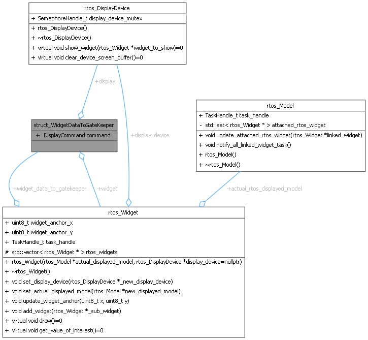

- Generated by
 1.16.1
1.16.1
data structure used to queue widget data to send to the display task More...
#include <display_device.h>

Public Attributes | |
| DisplayCommand | command {DisplayCommand::SHOW_IMAGE} |
| the command to be executed by the display task | |
| rtos_DisplayDevice * | display = nullptr |
| the display device | |
| rtos_Widget * | widget = nullptr |
| the widget to be displayed | |
data structure used to queue widget data to send to the display task